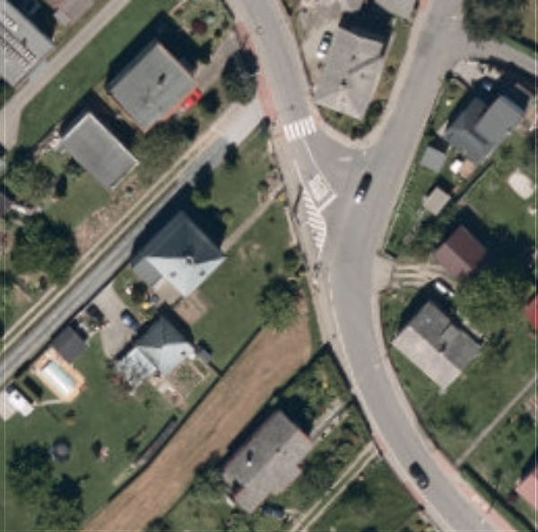
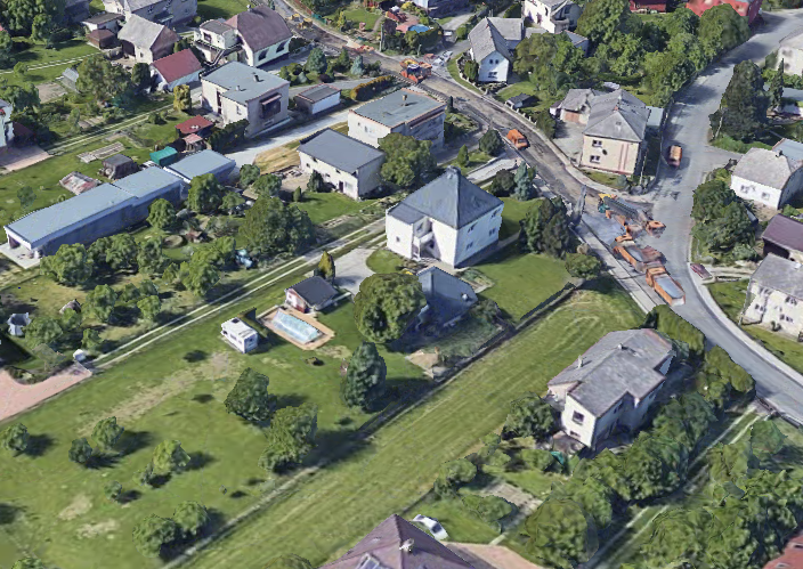
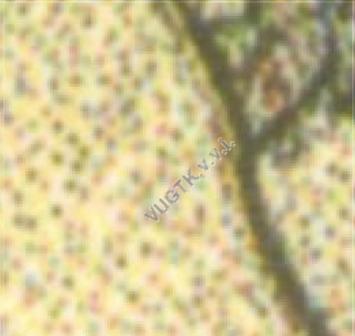
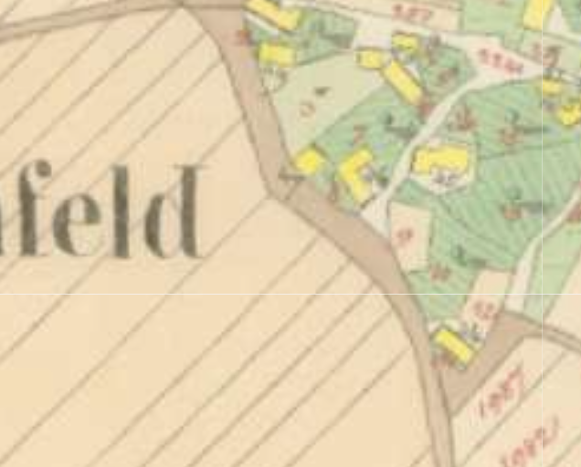
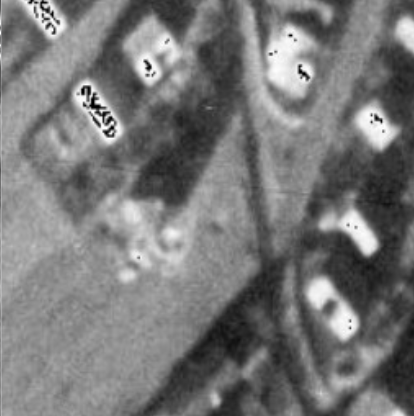
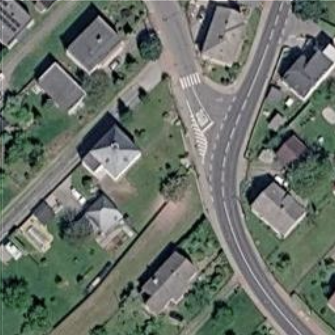
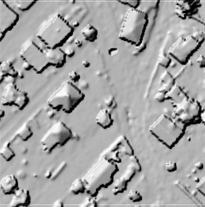

Pavlínka je moderní GIS aplikace navržená pro efektivní prohlížení, analýzu a správu prostorových dat. Spojuje data z katastru nemovitostí, inženýrských sítí a historických mapových podkladů do jednoho intuitivního rozhraní.

Ortofoto ČÚZK
3D model Cesium
II. vojenské mapování
Císařské otisky
50. léta
Google Satelitní
Model povrchuPřepněte do 3D a prozkoumejte krajinu včetně detailních modelů budov a terénu.
Plynulé přepínání mezi leteckými snímky, historickými mapami a výškovými modely.
Okamžité hledání adres, parcel a obcí s automatickým přiblížením.
Nástroje pro přesné zjištění vzdáleností, obvodů a ploch v mapě.
Export mapy do PDF s možností volby měřítka, legendy a souřadnic.
Kreslení bodů a polygonů do mapy. Zákresy zůstávají trvale uloženy v prohlížeči.
Interaktivní tabulka pro filtrování a zobrazení detailních informací o objektech.
Rychlá identifikace parcel a zobrazení rozměrů hranic jedním kliknutím.
Tvorba výškových profilů a výpočet viditelnosti z libovolného bodu.
Posuvník pro plynulé srovnávání archivních ortofotomap z let 1998–2022.
Samostatný modul Státy pro vizualizaci procestovaných zemí a vedení statistik.